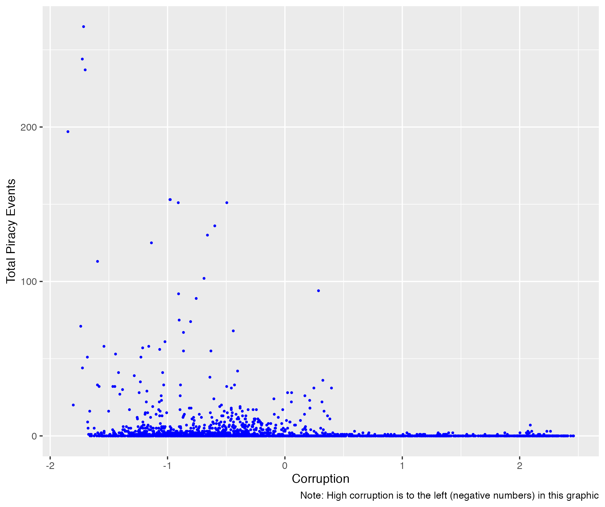
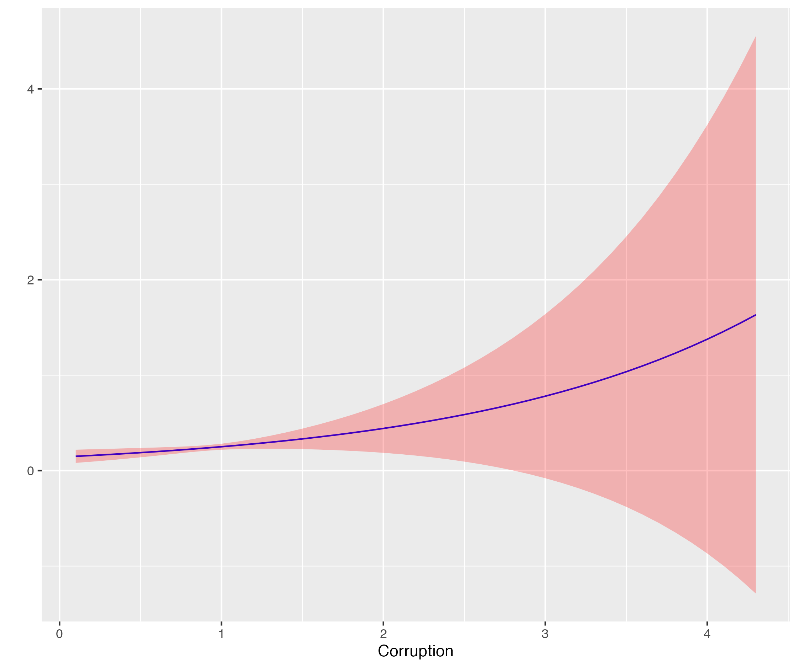
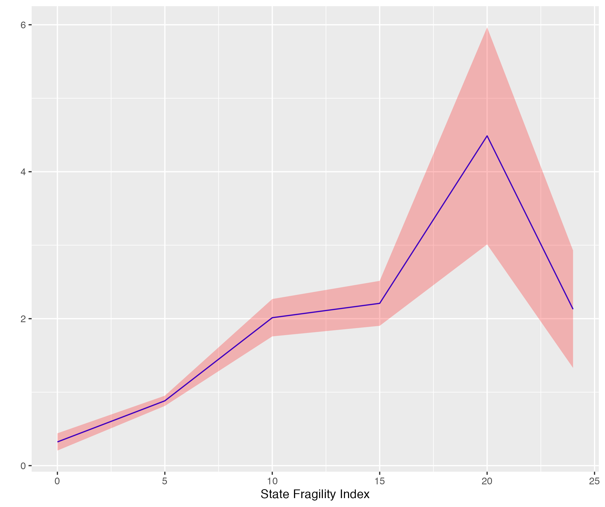

Variable | N | Mean | Median | Std. Dev. | Min | Max |
|---|---|---|---|---|---|---|
Total Pirate Attacks | 2,644 | 3.1093 | 0.00 | 14.3827 | 0.00 | 265.00 |
Corruption | 2,895 | 2.5731 | 2.83 | 1.0121 | 0.04 | 4.35 |
State Fragility Index | 3,017 | 8.5071 | 8.00 | 6.3501 | 0.00 | 25.00 |
Polity | 2,974 | 3.8779 | 6.00 | 6.3358 | -10.00 | 10.00 |
Military Expenditures ($US, millions) | 2,571 | 9,950.07 | 995.00 | 47,534.92 | 0.00 | 693,600.00 |
Ln GDP per capita (PPP) | 3,153 | 9.3136 | 9.38 | 1.1373 | 6.14 | 11.63 |
Ln Coastline Length | 3,521 | 7.1299 | 7.16 | 1.6715 | 3.00 | 12.22 |
Ln Population | 3,368 | 2.4583 | 2.39 | 1.6449 | -0.98 | 7.25 |
In today’s highly globalized economy, maritime shipping increasingly acts as the backbone of global supply chains and the lynchpin that sustains economic activity throughout the world. The COVID-19 pandemic and its associated public health restrictions recently provided a highly visible demonstration of the far-reaching consequences that any disruption to this tightly interwoven system can have. This highlights the importance of understanding and effectively controlling threats to shipping such as piracy.
In this regard, most recognize that corruption is a critical element in the piracy story. Indeed, the world’s two foremost piracy hotspots, Indonesia and Nigeria, are both well known for high levels of corruption (currently ranking 110th and 150th in the world respectively according to the 2022 assessment by Transparency International). At present, however, the empirical research to fully develop our understanding of the connections between corruption and piracy is virtually nonexistent, a deficiency we aim to rectify here.
Corruption and the Economic Opportunities for Piracy
Most researchers agree that piracy can be best understood through an economic opportunities framework. The central argument in this approach (originated by Becker in 1968) is that individuals, in seeking to maximize their economic gains, will choose to engage in criminal activities when the expected earnings (adjusted for the risk and severity of possible punishment) outweigh their legitimate economic opportunities. By extension, total rates of piracy in a region reflect the aggregation of these individual decisions and are broadly driven by the local conditions that shape the opportunity structure. Thus, existing piracy research has largely emphasized economic conditions, particularly within the fishing industry, in the understanding that inadequate economic opportunities will prompt larger numbers to turn to the illicit gains of piracy as an alternative source of income to meet their financial needs.
Within this framework, there are two key mechanisms through which corruption can be expected to influence the opportunity structure. The first is by limiting legitimate economic opportunities. Numerous studies have explored the relationship between corruption and economic growth. Aside from a handful of exceptions in particular circumstances, these studies broadly find that corruption significantly reduces economic growth and development. This suggests that the availability of legitimate forms of employment and the expected economic gains that they offer will be reduced for countries in which corruption is prevalent. This can be expected to increase the likelihood that individuals will perceive the potential proceeds of piracy as preferable in comparison.
Secondly, and more importantly, corruption directly impacts the net gains associated with piracy by altering the associated costs. Corruption affords the prospective pirate the opportunity to substantially reduce (if not eliminate entirely) the risk of detection and punishment in exchange for a relatively small financial payment in the form of a bribe. This can be assumed to reduce the total costs of a pirate attack (as the pirate retains the option of “taking his chances” if the expected costs of punishment are less than the cost of bribery), thereby increasing the retained net gains. Furthermore, conditions of widespread corruption can produce a crime-corruption nexus that sustains organized crime and undermines efforts to increase enforcement.
In sum, both mechanisms indicate that higher levels of corruption should be expected to lead to an increased threat of piracy. The question, however, is whether real world data will confirm that measures of corruption can reliably predict the occurrence of piracy, and does so in a way that is not simply coincidental.
Actual Effects of Corruption on Piracy
To test this predicted relationship, we will compare total piracy event counts from the Maritime Piracy Event and Location Data Project (MPELD) compiled by Brandon Prins with corruption measurements from the World Bank’s Worldwide Governance Indicators data by country for the years 1996 - 2016. More specifically, we are using the Control of Corruption Estimates indicator, which assigns a score for each country ranging from approximately -2 (for highest corruption) to 2.5 (for lowest corruption). Figure 1 below shows a simple scatterplot of the data, broadly indicating that most piracy does indeed occur in countries with heightened levels of corruption.

To assess the actual significance of this relationship, we will construct a predictive model using a Generalized Estimating Equation, which accounts for correlations in the data within countries across the time series. To ensure the validity of the results, the model will control for a number of potentially relevant factors identified in previous research, including a measure of state weakness (the State Fragility Index from the Center for Systemic Peace), regime type (Polity5 data, also from the Center for Systemic Peace), military expenditures as a measure of security capabilities (from the Correlates of War Project), GDP per capita (purchasing power parity), coastline length, and population. Additionally, to ease the interpretation of the results, the Corruption Estimates indicator is adjusted from its initial high to low corruption format to a more intuitive low to high scale. Altogether, the model examines a total of 1,848 state-year observations from 110 countries. The results are presented in the two tables below.
Model 1 | |
|---|---|
Attack Count | |
Corruption | 0.5680 (0.2707)** |
State Fragility Index | 0.0659 (0.0305)** |
Polity | -0.0035 (0.0262) |
Military Expenditures ($US, millions) | -0.00001 (0.00000) |
Ln GDP per capita (PPP) | 0.0744 (0.1354) |
Ln Coastline Length | 0.2617 (0.1280)** |
Ln Population | 0.4596 (0.1184)*** |
Constant | -5.5728 (1.6876)*** |
N | 1,848 |
Wald χ2 (p<) | 114.79 (0.000) |
Standard errors in parentheses. *** p < 0.01, ** p < 0.05, * p < 0.1 two-tailed tests. | |
As can be seen in Table 2, the coefficient for corruption is positive and significant (at the 95% confidence level), indicating that more corruption does indeed result in more piracy. More specifically, it suggests that all else being equal, a country with a level of corruption equivalent to the global average will experience more than three times as much piracy as it would if it had a very low corruption score of 0.5. Furthermore, not only does piracy increase with corruption, the rate of increase also increases. The marginal effects graph in Figure 2 (a) displays the rate of change in the predicted attack count relative to corruption (with all other variables held constant at their respective averages), and indicates that the rate of piracy can be expected to double for every increase of 1.22 in the corruption score. More importantly, perhaps, a relatively modest 0.5 improvement in the corruption score can be expected to reduce the incidence of piracy by 25%.


Note: Marginal effects represent rate of change in predicted attack count, not total attacks. Shaded area in red represents 95% confidence interval
Also noteworthy is the manner in which corruption interacts with state weakness. Previous research has repeatedly found state weakness to be a significant factor in the incidence of piracy, with weaker states experiencing more attacks, and these findings offer further corroboration. Figure 2 (b) above (on the right) plots the marginal effects of corruption on piracy at various levels of state weakness. It demonstrates that the effects of corruption become stronger as state weakness increases (up until a fragility score of twenty, the threshold commonly regarded as the point at which state weakness becomes outright state failure). Thus, not only can we intuitively expect weak states to exhibit more corruption, the impact of that corruption on piracy will be more severe.
Interestingly, contrary to previous research, the model also finds that state capabilities (as measured by military expenditures) do not meaningfully impact piracy outcomes. This result holds, even when replacing military expenditures with the broader Composite Index of National Capabilities. This implies that capabilities may lose significance once corruption is introduced into the statistical modeling. It also suggests that the instinctive response to increase security capabilities may have little impact on piracy.
Implications for Policy
These findings have important implications for policymakers seeking to address the threat of piracy. They indicate that policy approaches that narrowly focus on increasing security capacity and enforcement are unlikely to be successful as long as corruption remains a significant problem. This is particularly relevant for third party nations, such as the United States, which frequently turn to foreign aid and security assistance as options of first resort in addressing transnational issues of concern. Not only does corruption risk diverting such funds from their intended use, it ultimately does not matter how capable the relevant authorities are so long as they are willing to turn a blind eye for a cut of the profits. This is not to say that security capabilities are entirely irrelevant or should be ignored, simply that they cannot be the sole focus of piracy mitigation efforts. A truly effective strategy must emphasize substantive efforts to reduce corruption and improve governance alongside capacity-building endeavors.